Ở ô Tài khoản, giữ lựa chọn Nguyễn Văn An — Người dân.
Bấm nút Đăng nhập (tài khoản demo đã chọn sẵn).
Bản cài đặt cho điện thoại (APK, TestFlight) chưa phát hành. Trong giai đoạn demo, dùng trình duyệt.
1.2. Trang chủ
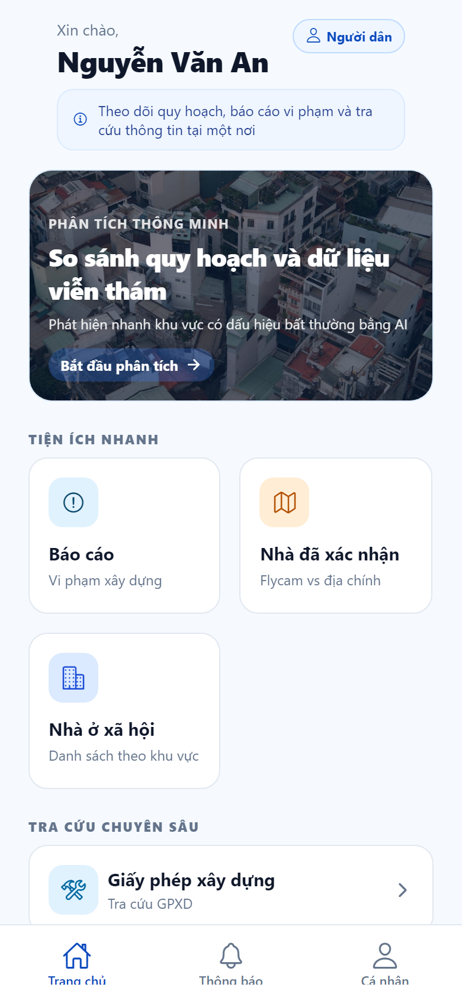
Hình 1 — Trang chủ của Người dân
Khu vực
Dùng để
Phân tích thông minh
So sánh ảnh quy hoạch và ảnh viễn thám bằng AI
Báo cáo
Gửi phản ánh vi phạm xây dựng
Nhà đã xác nhận
Xem các công trình cán bộ đã xác nhận từ ảnh flycam
Nhà ở xã hội
Danh sách dự án theo khu vực
Tra cứu chuyên sâu
Giấy phép xây dựng, Văn bản pháp luật, Thủ tục hành chính
Quyết định xử phạt của tôi
Chỉ hiện khi bạn là người vi phạm trong một hồ sơ (xem phần 4)
Báo cáo của tôi
Các phản ánh gần nhất. Bấm Xem tiến độ để xem tất cả
1.3. Cá nhân
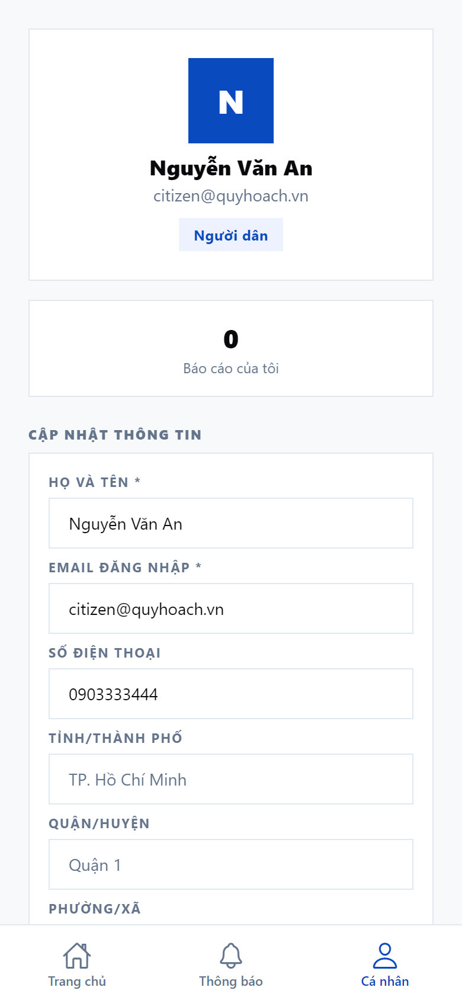
Hình 2 — Mục Cá nhân
Bấm Cá nhân ở thanh dưới.
Sửa họ tên, email, số điện thoại, địa chỉ. Bấm Lưu thông tin.
Menu: Báo cáo đã gửi, Quyết định xử phạt của tôi, Đổi mật khẩu.
Bấm Đăng xuất rồi xác nhận để thoát.
Hãy khai đúng số điện thoại. Nếu bạn bị lập biên bản, hệ thống dùng số này để gửi quyết định cho bạn trên app.
2. Gửi phản ánh vi phạm
Bước 1 của quy trình. Phản ánh được mở thành một hồ sơ vụ việc.
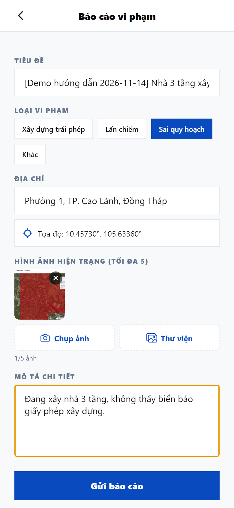
Hình 3 — Form Báo cáo vi phạm, đã chọn loại, lấy tọa độ và gắn 1 ảnh
Ở Trang chủ, bấm Báo cáo.
Nhập Tiêu đề, ví dụ: "Nhà 3 tầng xây trên đất sản xuất".
Chọn Loại vi phạm: Xây dựng trái phép, Lấn chiếm, Sai quy hoạch hoặc Khác.
Nhập Địa chỉ.
Bấm Lấy tọa độ GPS hiện tại. Cho phép trình duyệt dùng vị trí khi được hỏi. Ô này đổi thành "Tọa độ: …".
Thêm ảnh hiện trạng: bấm Chụp ảnh hoặc Thư viện. Tối đa 5 ảnh.
Ghi Mô tả chi tiết.
Bấm Gửi báo cáo. App mở màn Tiến độ xử lý của hồ sơ vừa tạo.
Nên đứng gần công trình khi lấy GPS. Vị trí giúp cán bộ tìm đúng thửa đất khi tiền kiểm.
3. Theo dõi tiến độ và thông báo
Người phản ánh chỉ xem tiến độ. Không xem được thông tin người vi phạm và mức phạt.
3.1. Màn Tiến độ xử lý
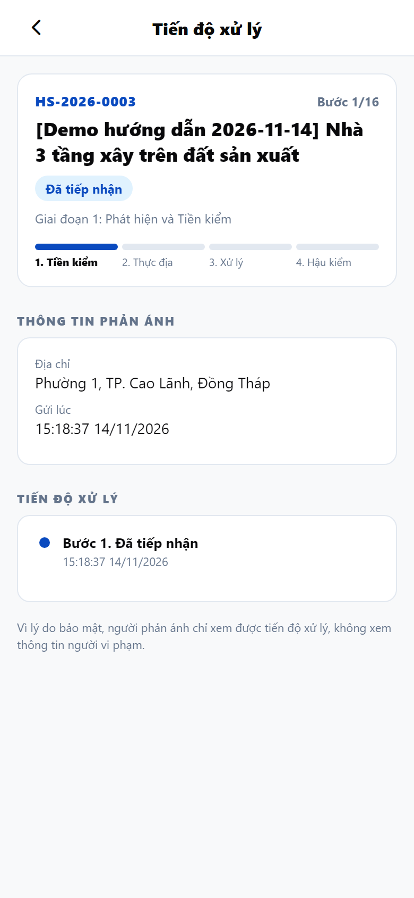
Hình 4 — Tiến độ xử lý: mã hồ sơ, bước hiện tại, thanh 4 giai đoạn
Mở bằng một trong ba cách: Trang chủ → Báo cáo của tôi; Cá nhân → Báo cáo đã gửi; hoặc bấm một thông báo.
Xem mã hồ sơ (ví dụ HS-2026-0003), bước hiện tại (ví dụ "Bước 1/16") và giai đoạn.
Phần Tiến độ xử lý liệt kê các mốc đã qua, kèm giờ.
Nhãn bạn thấy
Ý nghĩa
Đã tiếp nhận
Cơ quan đã nhận phản ánh, đang tiền kiểm trên bản đồ
Không phát hiện vi phạm
Tiền kiểm không thấy vi phạm, hồ sơ đã đóng
Đang kiểm tra thực địa
Cán bộ được giao đi hiện trường, lập biên bản
Đang xử lý vi phạm
Đã có quyết định, đang chờ khắc phục hoặc hậu kiểm
Đã xử lý xong
Hồ sơ đã đóng
3.2. Thông báo
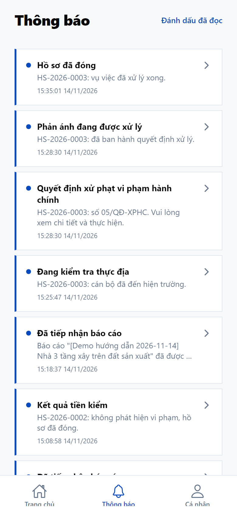
Hình 5 — Thông báo theo từng mốc của hồ sơ
Bấm Thông báo ở thanh dưới.
Bấm một mục để mở hồ sơ liên quan. Mục đó được đánh dấu đã đọc.
Bấm Đánh dấu đã đọc để đọc hết.
Bạn nhận thông báo khi: hồ sơ được tiếp nhận, có kết quả tiền kiểm, cán bộ đến hiện trường, có quyết định xử lý, hồ sơ đóng.
4. Khi bạn là người vi phạm
Bước 11–12 và nhánh Điều 85. Chỉ áp dụng khi số điện thoại trong biên bản trùng số điện thoại tài khoản của bạn.
flowchart TD
TB["Thông báo: Quyết định xử phạt"] --> XEM["Mở Quyết định xử phạt của tôi"]
XEM --> LOAI{"Quyết định yêu cầu gì?"}
LOAI -->|Khắc phục, nộp phạt| KP["Nộp phạt, khắc phục"]
KP --> BC["Gửi báo cáo khắc phục kèm ảnh"]
BC --> HK["Cán bộ hậu kiểm"]
HK -->|Không đạt| KP
HK -->|Đạt| DONG["Hồ sơ đóng"]
LOAI -->|Điều 85: xin giấy phép| GP["Xin cấp/điều chỉnh giấy phép 35 hoặc 120 ngày"]
GP --> NGP["Nộp giấy phép trên app"]
NGP --> KT["Cán bộ kiểm tra trong 5 ngày"]
KT -->|Phù hợp| DONG
KT -->|Không phù hợp| PD["Tự phá dỡ trong 15 ngày"]
GP -->|Hết hạn, không được cấp| PD
PD --> BC
4.1. Xem quyết định
Khi có quyết định, bạn nhận thông báo "Quyết định xử phạt vi phạm hành chính".
Trang chủ hiện thẻ Quyết định xử phạt của tôi, ghi số hồ sơ và số việc cần bạn làm. Cũng có trong Cá nhân.
Bấm vào để mở Hồ sơ vụ việc. Bạn xem được: biên bản hiện trường, quyết định (số quyết định, hành vi, mức phạt, căn cứ, biện pháp khắc phục, hạn khắc phục).
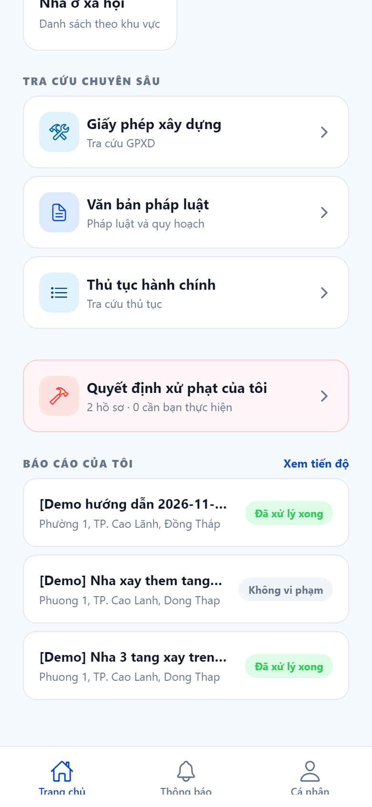
Thẻ Quyết định xử phạt của tôi trên trang chủ, kèm danh sách phản ánh và trạng thái
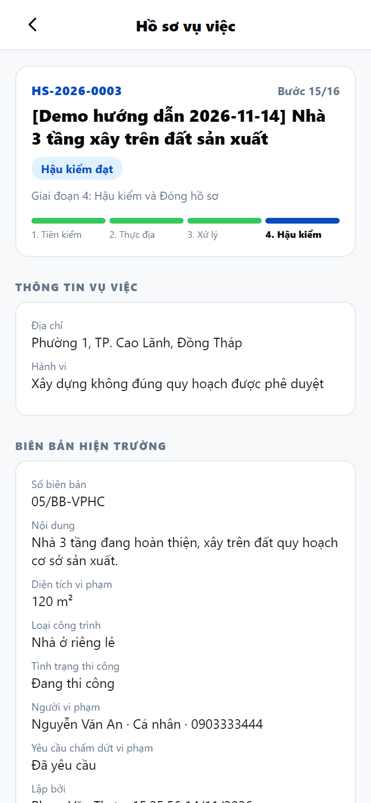
Hình 6 — Hồ sơ vụ việc người vi phạm thấy: thông tin vụ việc và biên bản. Kéo xuống để xem quyết định
4.2. Báo cáo kết quả khắc phục
Nộp phạt và thực hiện biện pháp khắc phục ghi trong quyết định (ví dụ: phá dỡ phần vi phạm).
Mở hồ sơ. Ở mục Việc cần làm, bấm Báo cáo kết quả khắc phục.
Bật Đã nộp phạt nếu đã nộp. Có thể gắn ảnh biên lai nộp phạt (1 ảnh).
Gắn ảnh hiện trạng sau khắc phục: bắt buộc, từ 1 đến 5 ảnh.
Ghi chú nếu cần. Bấm Gửi báo cáo khắc phục.
Sau đó Cán bộ Quản lý yêu cầu hậu kiểm. Cán bộ Xử lý ra hiện trường kiểm tra. Nếu không đạt, hồ sơ quay lại bước khắc phục và bạn gửi báo cáo lại.
4.3. Nộp giấy phép mới (Điều 85)
Áp dụng khi xây không phép hoặc sai phép mà công trình còn đang thi công. Quyết định cho bạn thời hạn để xin giấy phép:
35 ngày với nhà ở riêng lẻ.
120 ngày với công trình phải lập Báo cáo kinh tế - kỹ thuật hoặc Báo cáo nghiên cứu khả thi.
Làm thủ tục xin cấp hoặc điều chỉnh giấy phép tại cơ quan có thẩm quyền.
Khi có giấy phép, mở hồ sơ, bấm Nộp giấy phép được cấp/điều chỉnh.
Nhập Số giấy phép xây dựng. Bấm Nộp giấy phép.
Cán bộ Xử lý kiểm tra hiện trạng trong 5 ngày. Phù hợp thì hồ sơ đạt. Không phù hợp thì bạn phải tự phá dỡ trong 15 ngày.
Hết hạn hoặc không được cấp phép: bạn phải tự phá dỡ trong 15 ngày, sau đó gửi báo cáo khắc phục như mục 4.2.
Nếu số điện thoại trong biên bản không trùng tài khoản của bạn, bạn sẽ không thấy quyết định trên app. Khi đó cán bộ nhập thay kết quả khắc phục và giấy phép.
5. Tra cứu thông tin
Giấy phép xây dựng, văn bản pháp luật, thủ tục hành chính, nhà ở xã hội, so sánh ảnh bằng AI.
5.1. Giấy phép xây dựng
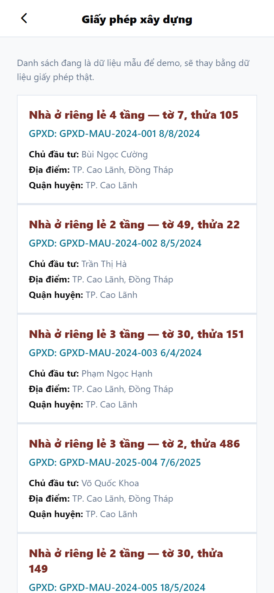
Hình 7 — Giấy phép xây dựng (dữ liệu mẫu để demo)
Trang chủ → Giấy phép xây dựng.
Mỗi giấy phép ghi loại công trình, tờ, thửa, số giấy phép, ngày cấp, chủ đầu tư, địa điểm.
Bấm một giấy phép để xem chi tiết.
Danh sách hiện là dữ liệu mẫu (mã GPXD-MAU-…). Sẽ thay bằng dữ liệu giấy phép thật.
5.2. Văn bản pháp luật
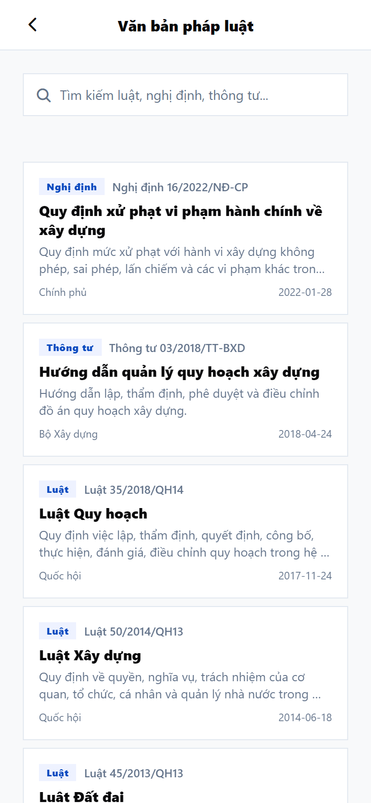
Hình 8 — Văn bản pháp luật
Trang chủ → Văn bản pháp luật.
Gõ từ khóa để tìm.
Bấm một văn bản để xem tóm tắt và nội dung.
5.3. Thủ tục hành chính
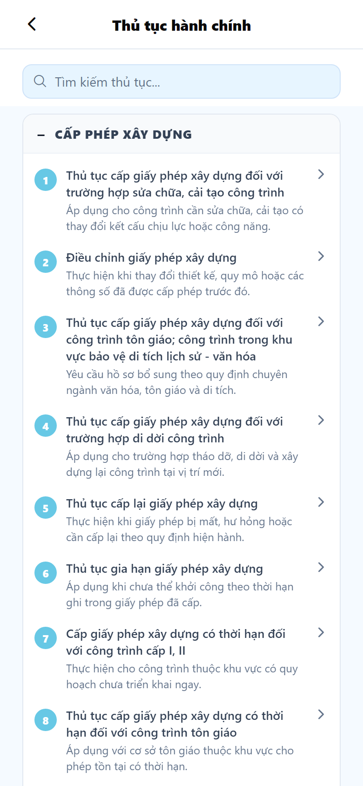
Hình 9 — Thủ tục hành chính
Trang chủ → Thủ tục hành chính.
Tìm kiếm hoặc mở từng nhóm.
Xem hồ sơ cần nộp, thời hạn, lệ phí, nơi tiếp nhận, căn cứ pháp lý.
5.4. Nhà ở xã hội
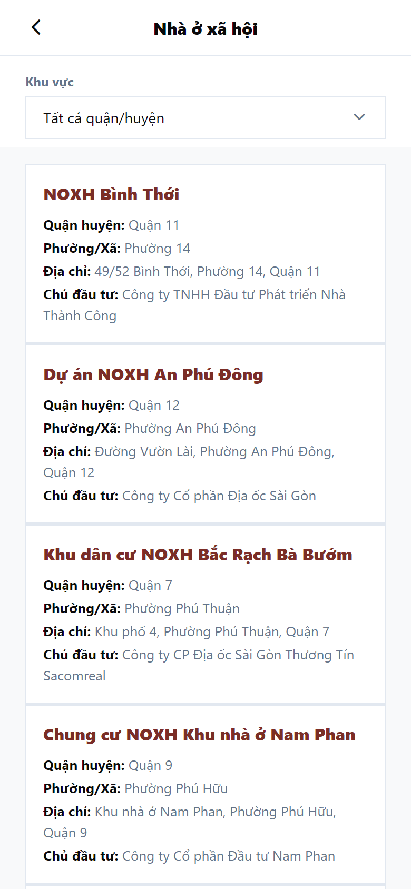
Hình 10 — Nhà ở xã hội
Trang chủ → Nhà ở xã hội.
Chọn khu vực để lọc.
Xem tên dự án, địa chỉ, chủ đầu tư.
5.5. So sánh quy hoạch và ảnh viễn thám
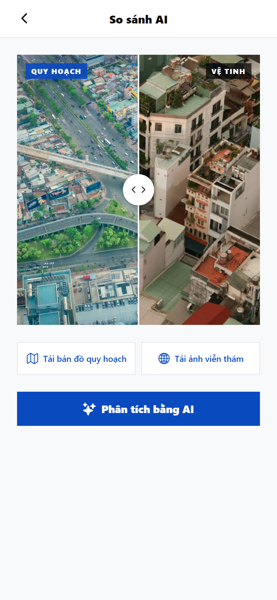
Hình 11 — So sánh AI: kéo thanh giữa để so ảnh quy hoạch và ảnh vệ tinh
Trang chủ → Bắt đầu phân tích.
Bấm Tải bản đồ quy hoạch và Tải ảnh viễn thám để chọn hai ảnh.
Bấm Phân tích bằng AI, xem các điểm khác biệt AI tìm được.
Kết quả chỉ để tham khảo, không phải kết luận vi phạm.